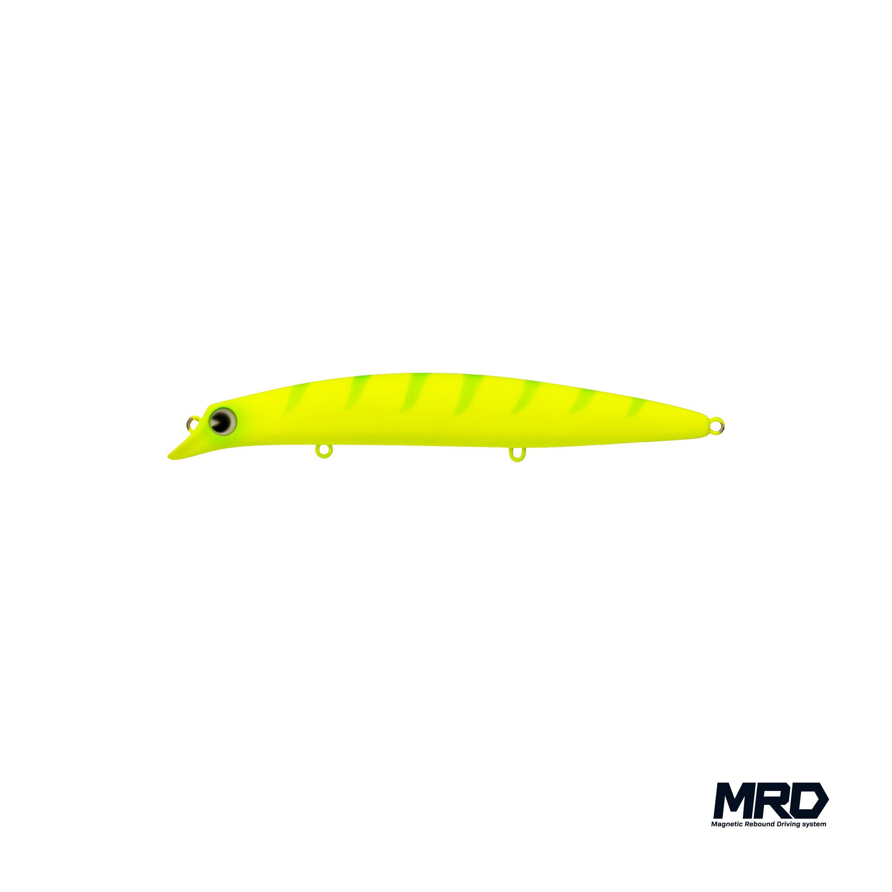
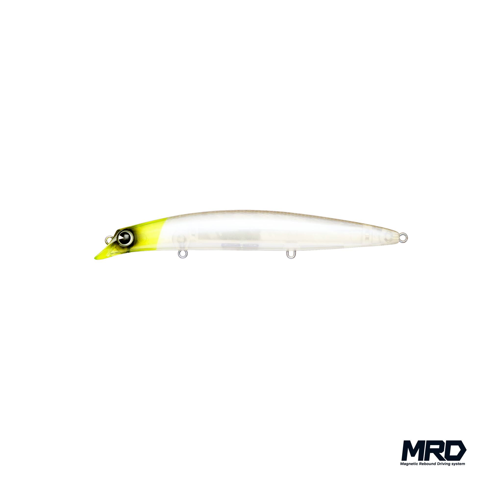
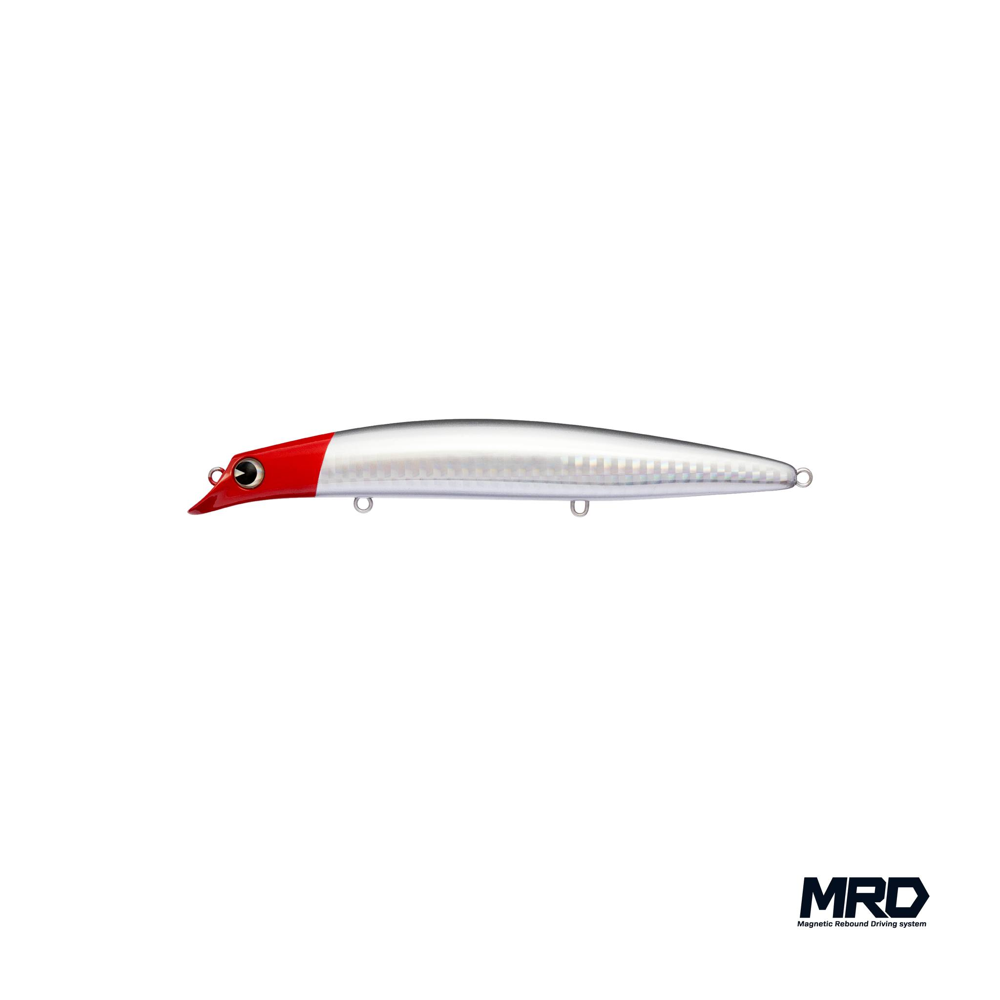
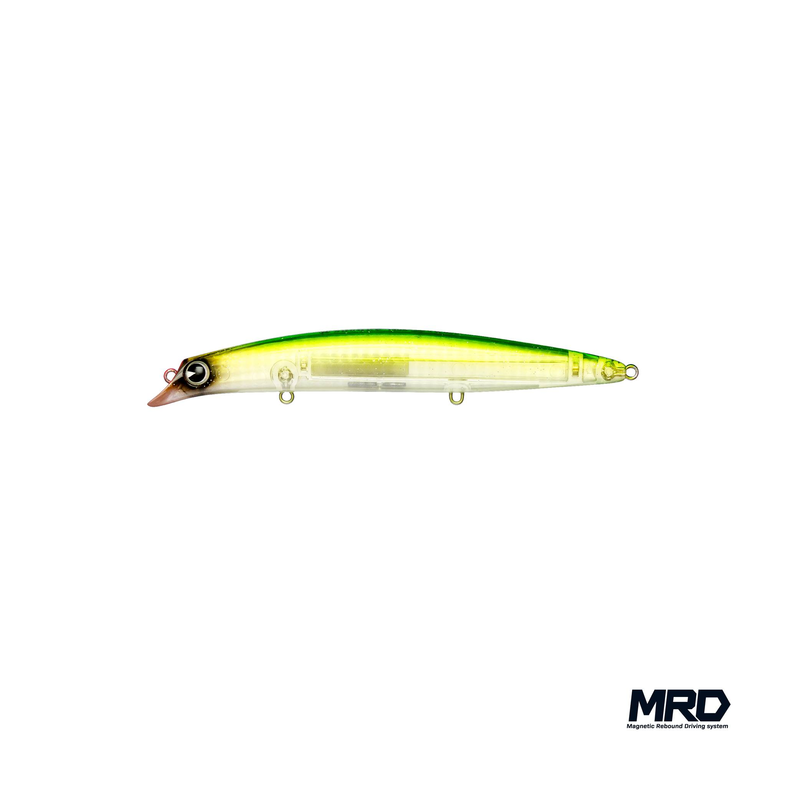

サスケ140S真裂風
（sasuke 140S 真裂風）
サスケ140S真裂風（シンレップウ）はima（アイマ）のシンキングミノーです。
2024年に登場した「sasuke 140 真裂波」のシンキングモデルとして、2026年11月10日に発売予定の新作。アクションを抑えたシンキングで、140mm・26gの重さを生かして、より遠く・より深いレンジを攻められるのが特徴です。

画像出典:ima公式Instagram
スペック
- メーカー
- ima（アイマ）
- タイプ
- シンキング（ミノー）
- 全長
- 140mm
- 自重
- 26g
- レンジ
- 70〜110cm
- アクション
- ウォブンロール
- フック
- #4
- リング
- #3
- ターゲット
- シーバス
- 価格
- 2,860円（税込）
- 発売
- 2026年11月10日
▼今すぐチェック


サスケ140S真裂風の特徴
アクションを抑えたシンキングの「真裂波」
-
真裂波のシンキングモデル
重心移動システム「MRD」で飛行姿勢を安定させた「sasuke 140 真裂波」をベースに、シンキング化したモデル。公式の製品画像にもMRDのロゴが入っています。
-
26gの自重で遠投・深場に強い
140S裂風（21g）より5g重い26g。向かい風の中でも飛距離を出しやすく、レンジは70〜110cmと、裂風よりも少し深いところまで探れます。
-
あえてアクションを抑えた泳ぎ
サスケらしいウォブンロールを持ちながら、動きは控えめな設定。強い流れの中でも暴れにくく、プレッシャーの高いシーバスにも違和感を与えにくい泳ぎです。
サスケ140S真裂風の使い方
着水後にカウントダウンで沈めてから、スロー〜ミディアムのただ巻きが基本。重さがあるので、流れの強い場所でもレンジを外さずに引けます。
流れの中ではアップクロスに投げてドリフトさせ、ルアーが流れに入ったところで巻きスピードを少し落とすと、控えめなアクションを生かして食わせの間を作れます。
サスケ140S真裂風の得意な状況
向かい風や波が強い日、流れが速い河川・河口、水深のある磯やサーフ。飛距離が欲しいけれど、アクションの強いルアーには反応しないスレたシーバスを狙うときに出番です。
ワンポイント
同じ140mmのシンキングでも、140S裂風（21g）はレンジ70〜100cm、真裂風（26g）は70〜110cm。浅めの場所では裂風、遠投して深めを探りたいときは真裂風と使い分けると、レンジの穴を作らずに攻められます。
サスケ裂波・裂風シリーズの使い分け
| モデル | 全長／自重 | 得意な場面 |
|---|---|---|
| sasuke 120 裂波 | 120mm／17g | フローティング。シャローを引き波立てながら探りたいときに |
| sasuke 120S 裂風 | 120mm／18g | シンキング。120裂波の一枚下のレンジをスローに引きたいときに |
| sasuke 140S 裂風 | 140mm／21g | シンキング。荒れた日や足場の高いポイントで飛距離と操作性が欲しいときに |
| sasuke 140S 真裂風 | 140mm／26g | シンキング（2026年11月発売）。アクションを抑えて、さらに遠く・深くを攻めたいときに |
フローティングの「裂波」はシャロー、シンキングの「裂風」はその一枚下のレンジ、と覚えると使い分けやすくなります。ベイトのサイズに合わせて120と140を選び、風や波が強い日ほどシンキングの裂風が出番です。
人気カラー
全12色（RH、CBP、ウミベイト、カワベイト、玉彩弐、ビードロ、マットチャートギーゴ、CHテレサ、RHホロ、ゼンベイト、サイトジョーカー、ライムスター）から4色を紹介します。

マットチャートギーゴ蛍光チャートに縞模様のマットカラー。濁り潮やローライトで、強いシルエットを見せたいときに。

CHテレサチャートのヘッドに透け感のあるパールボディ。ナチュラルさを残しつつ、ヘッドの色で位置を確認しやすいカラー。

RHホロ定番のレッドヘッドにホロのフラッシングをプラス。日中や月夜など、光がある状況で目立たせたいときに。

ライムスターグリーンの背中に透けるクリアボディ。澄み潮の日中や、朝夕のマヅメに。
画像出典:ima公式Instagram
サスケ140S真裂風に似ているルアー
-
 サスケ140S裂風
ima
詳細はこちら＞
サスケ140S裂風
ima
詳細はこちら＞
同じサスケの140mmシンキング。21gと軽めで、少し浅いレンジを探りたいときに。
-
 セットアッパー145S-DR
ダイワ
詳細はこちら＞
セットアッパー145S-DR
ダイワ
詳細はこちら＞
145mm・39gのシンキングミノー。さらに深いレンジを遠投で攻めたいときに。
-
 ブローウィン140S
ブルーブルー
詳細はこちら＞
ブローウィン140S
ブルーブルー
詳細はこちら＞
140mm・23gのシンキングミノー。同じサイズ感で、泳ぎの違うルアーをローテーションしたいときに。